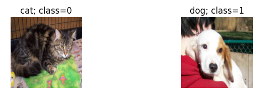
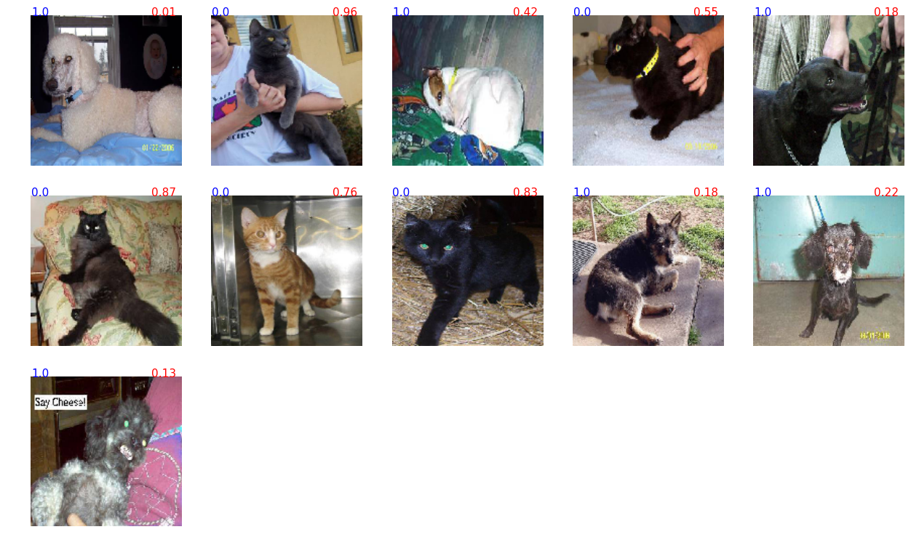
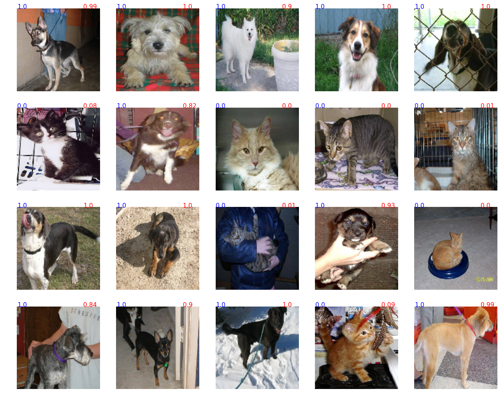

Свёрточные нейронные сети
2. Свёрточные нейронные сети (Convolutional neural network/CNN)
Свёрточные нейронные сети представляют из себя одну из разновидностей искусственных нейронных сетей. При их создании учитывались некоторые особенности зрительной коры живых организмов к распознаванию отдельных частей изображений их дальнейшему обощению по мере прохождения нервного импульса. То есть, в процессе интерпретации такой нейронной сетью, осуществляется переход от конкретных особенностей изображения к более абстрактным деталям, и далее ещё более абстрактным деталям вплоть до выделения понятий высокого уровня. Сеть сама принимает решение, как обобщать информацию.
Например, модель обучена на множестве изображений лиц. Классификация этих изображений осуществлялась по именам. Для того, чтобы предсказать какого-либо человека по его фото (сеть видела ДРУГИЕ фото этого человека), модель должна сначала определить, где на фото границы областей, затем она выделяет отдельные черты лица. По мере продвижения по слоям, признаки становятся всё более и более обобщёнными и, в конечном итоге, модель "решает", что на фото Сара.

Так как такие сети хорошо распознают изображения, в медицине их активно используют в диагностике различных заболеваний по КТ или МРТ изображениям. Например, болезнь Альцгеймера. Применение свёрточных нейронных сетей ограничивается не только распознаванием изображений. Они показали хорошие результаты в распознавании эмоциональной окраски текстов, идентификации авторов произведений, в психиатрии нашёл пока что только одну публикацию
Для иллюстрации данной модели я решил использовать базу данных фотографий кошек и собак. То есть, я буду решать проблему бинарной классификации. База фото представлена здесь. Она содержит 25000 фотографий кошек и собак.
Для иллюстрации возможностей нейронных сетей я решил использовать только 16% данных, т.е. по 1000 изображений животных каждого вида для обучения (1000 кошек+1000 собак=2000) и по 1000 изображений животных для определения точности модели (также, 1000 кошек+1000 собак=2000).
Сделал я это потому, что хотелось протестировать модель в условиях недостатка данных, что часто бывает в медицине.
Для обучения я выбрал архитектуру глубокой нейронной сети InceptionV3, разработанную в корпорации Google. Модель содержит 217 слоёв и 21,611,968 "синапсов".
Схематически она выглядит так:

Для полной тренировки такой глубокой модели мне не хватило мощности видеокарты, поэтому я загрузил уже обученные данные в мою сеть. Обученные данные взяты из такой же модели, которую обучали приблизительно на 10 млн размеченных изображений с применением базы данных ImageNet.
Загружаю созданную модель:
model=load_model('cat_dog_inc_model.hdf5')
for layer in model.layers[:205]:
layer.trainable = False
model.load_weights('weights/weights-improvement-139-0.92.hdf5')
model.compile(loss='binary_crossentropy',
optimizer=SGD(lr=1e-4, momentum=0.9),
#optimizer='rmsprop',
metrics=['accuracy'])
Данную модель я тренировал в течения ~20 часов (250 эпох обучения). За этот период удалось добиться точности более 90%
scores=model.evaluate_generator(pred_generator, val_samples=100)
print("%s: %.2f%%" % (model.metrics_names[1], scores[1]*100))
acc: 93.00%
Изображения представляют из себя фотографии собак и кошек. Кошки обозначены, как класс 0, собаки- как класс 1:

Загрузим изображения в сеть и распознаем их:
imgs,labels=pred_generator.next()
array_imgs=np.transpose(np.asarray([img_to_array(img) for img in imgs]),(0,2,1,3))
predictions=model.predict(imgs)
rounded_pred=np.asarray([round(i) for i in predictions])
pd.value_counts(labels)
0.0 50
1.0 50
dtype: int64
pd.crosstab(labels,rounded_pred)
| col_0 | 0.0 | 1.0 |
|---|---|---|
| row_0 | ||
| 0.0 | 45 | 5 |
| 1.0 | 6 | 44 |
Итак. Для модели было загружено 100 случайных изображений: 50 изображения кошек и 50 собак. Из 50 кошек модель правильно распознала 44, что составляет 88%. Из 50 собак правильно были распознаны 45, что составляет 90%. Общая точность модели на этой узкой выборке составила 89%.
Посмотрим, какие фотографии были распознаны неправильно:

Синие числа-истинный класс изображений. Красные числа- предсказанные моделью (если красное число меньше 0.5, модель считает, что на фото кот, если болше 0.5, то собака). Чем больше число приближается к нулю, тем сеть больше уверена, что перед ней кот. Чем больше число приближается к 1.0, тем больше сеть уверена, что перед ней собака. Видно, что большинство ошибок модели было в отношении изображений с чёрными животными и при нетипичном ракурсе.
Посмотрим первые 20 изображений, которые модель предсказала уверенно:

Видно, что модель прилично справляется с задачей распознавания изображений на сравнительно небольших выборках.